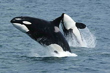

The killer whale or orca (Orcinus orca) is a toothed whale belonging to the oceanic dolphin family, of which it is the largest member. Killer whales have a diverse diet, although individual populations often specialize in particular types of prey. Some feed exclusively on fish, while others hunt marine mammals such as seals and other species of dolphin. They have been known to attack baleen whale calves, and even adult whales. Killer whales are apex predators, as no animal preys on them. A cosmopolitan species, they can be found in each of the world's oceans in a variety of marine environments, from Arctic and Antarctic regions to tropical seas, absent only from the Baltic and Black seas, and some areas of the Arctic Ocean.
Killer whales are highly social; some populations are composed of matrilineal family groups (pods) which are the most stable of any animal species. Their sophisticated hunting techniques and vocal behaviours, which are often specific to a particular group and passed across generations, have been described as manifestations of animal culture.
